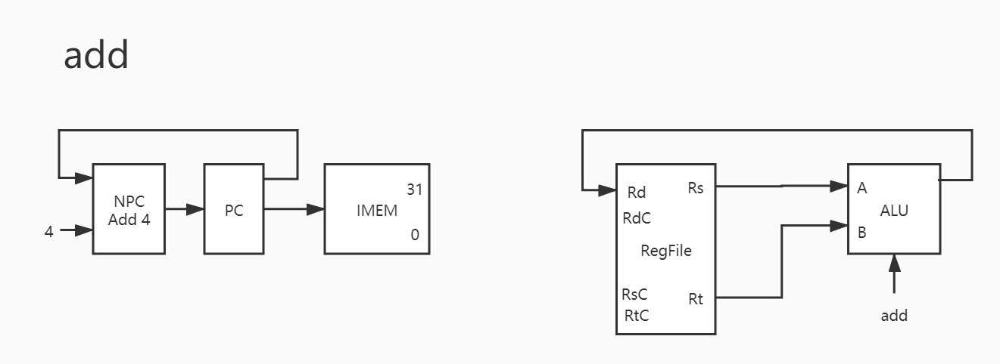

一、前言 说从 100 开始是因为希望都能轻松做完这个小实验吧。
其实要说的话，对于我这种学习不是很认真的人来说，强制力是保证学习成果的一个方法。比如这学期计组水的要死，据说前几届学长学姐 CPU31 都是期中的小作业，而放在我们这届却变成了大作业，感觉上的话，学校的要求变低，对我来说，的的确确使得产出变低。
在学校 mips 上面的资料提供了 8 条指令的 CPU 开发过程。虽说 mips 上的教程很明显是从哪个 csdn 或者 cnblog 博主那里直接 cv 下来的，但是要说起依靠这些文档，用 verilog 实现一个仅仅支持 31 条指令的 CPU 还不算是很难。
首先根据老师推荐，debug 用的是 verilog 的系统函数，诸如 fdisplay, display, fwrite，并将结果和 Mars 上汇编结果进行对比。这么做其实没啥问题，就是有点费神。这里也是想不出啥其他更好的办法了。
由于这个学期实在是特殊，所以所有 cpu 的设计仅仅保证前仿真通过。众所周知，通过前仿真和后仿真是两个概念，第一次下板能不能行，还得看天命。半年下来，开发板给我的感觉就是：“这是一个能给我带来 无限可能 的东西”。（可能以各种方式暴毙）
下面就来说一下开始写 CPU 前的准备吧：
二、配置注意事项 1. Mars 下的架构 学校要求的（能够和 Mars 产生相同输出，与网站仿真产生相同输出）CPU 是 哈佛结构 。冯诺依曼结构 有一个重要的概念叫做 存储程序 ，差不多就是 “程序和数据同存在一个存储器中”。IMEM），一为数据存储器（后称 DMEM）。
并且还需要格外注意两个点：
Mars 中 PC 从 0x0040_0000 开始 ，这意味着取指令要从这个地址开始，而不是想当然的 0x0000_0000。代码段的首地址 （可能有错，不过我是这么理解的）。同时，这也意味着，PC 和 指令存储器 的首地址要做一个映射。 比如：
1 2 3 wire [31 :0 ] PC, instruction_addr;assign instruction_addr = PC - 32'h0040_0000 ;
Mars 中 DMEM 从 0x1001_0000 开始 ，这就好理解多了，说明这个地址是 Mars 模拟下的数据存储器的首地址。
弄清了 PC 和 DMEM 首地址相关的事，就可以着手先把 IP 核配了。
2. 为啥是 IP 核 是因为测试数据并不是手敲 testbench 喂出来的，而是通过 coe 文件直接导入 IP 核搞的。
第一步：Distributed Memory Generator，这个就是要用的 IP 核。
第二步：
其实没啥可说的，之后要到 RST 这里加载 coe 文件。
点击红框圈选的按钮，就会弹出加载 coe 文件的界面。mips_31_mars_simulate.coe 是 mips 网站仿真时使用的文件，这个过了就能交作业了。
没了，直接点 OK，之后按上面这个来，点击 Generate，IP 核就在生成当中了。
3. Mars 咋整 在这个网站上下载：Mars 4_5 下载
这 UI 有二十年前那味儿了。
加载 txt 文件，单步 / 多步调试；
根据 txt 文件生成对应的 coe 文件，以此喂给 IP 核。
因为你看了那个 coe 之后会发现，里面都是 16 进制的符号，然而老师给的都是 txt 文件，里面都是货真价实的 mips 指令，肯定不能通过人工汇编，肯定不能自己手敲机器指令来喂给 IP 核。
对于第一点，如果我们做到了第二点，那么就需要一个权威的 mips 体系模拟器来做裁判，方便我们对自己写的代码 debug。这样结合一下 verilog 自带的 fdisplay，那就完美了。
由于 Mars 操作过于简单，这些真的不用多说，直接加载一份 txt 文件。这里我们选的 addiu 的指令 txt。
加载了 txt 之后，啥也不能干，必须要先汇编一下。
寄存器单元，在 31 条指令中，有 29 条指令（除开 j 和 jal）都和 寄存器 有关，所以这非常重要。这是检查正误最快的手段。
数据段，可以看到的确是从 0x1001_0000 开始的，也很重要。
代码段，的确是从 0x0040_0000 开始的，很重要很重要。
多步/单步调试按钮，顾名思义，自己试试。
导出按钮。
着重说下导出按钮：
没啥可说的，点了之后就会问导出的格式，这里咱们选择 16 进制格式，他并不会给出一个 16 进制文件（x），这个意思其实是以 16 进制格式导出指令。
先以无格式保存。
点击刚才保存的文件，这里我给出了一个真正的 coe 文件，我们可以发现，差的仅仅只是前两行，那么缝缝补补，就可以把导出的文件变成 coe 文件了。
4. 比对工具 我是拿眼睛比对的，效率还蛮高的。
三、指令分析 其实工具先学会用了并不影响进度，真要开始写，还得是好好分析分析指令。
命令总共被分为 3 大类，分别是 R，I，J。
R 我觉得就是和寄存器有很大关联的，两个操作数都是寄存器。
I 就是其中有个立即数。
J 指令甚至没有那么多操作数，跳转用。
下面对每个指令都看一下：
1. add 
1 2 3 4 5 6 PC -> IMEM PC + 4 -> NPC NPC -> PC Rs -> A Rt -> B RES -> Rd
其实与之类似的还有 addu/sub/subu/and/or/xor/nor ，也就是说这 8 条指令只有运算器控制信号不同，除此之外基本完全一致。因此下只放图，暂不赘述。
其实这就是 verilog 和咱们之前学过的程序设计语言（学过的程度）的区别了吧，很多语句都可以并行执行，这提供了便利，但是不得不说也造成了 debug 时的困难。
2. addu
3. sub
4. subu
5. and
6. or
7. xor
8. nor
9. slt 这个指令就和前面的不一样了，语义是给出大的一方。前者小于后者返回 1，前者大于后者返回 0。
这是一条可以用之前的指令实现的指令，比如配合 sub，将操作数二者做差，就可以得到对应的值；
这是一条新指令，需要用一个独特的 slt 控制信号来对应。
我选择的是第二种，因为个人认为 slt 也算是一种运算指令，可以用 alu 实现。
1 2 3 4 5 6 7 SLT: R <= (A < B); assign sign = (ALUC == SLT) ? R[0 ] : 1'b0 ;SLT: R <= A - B; assign sign = ...;
1 2 3 4 5 6 7 8 PC -> IMEM PC + 4 -> NPC NPC -> PC Rs -> A Rt -> B # 懒得改了，这里少画了一根线 SF -> EXT1 EXT1_out -> Rd
由于 alu 的 Rd / Rs / Rt 都是 32 位，所以需要 无符号扩展部件 ，把 sign flag 扩展到 32 位。这里的话，就将前面所说的 1 和 0，转化为了 SF 输出。
10. sltu
sltu 和 slt 看似及其类似，但是对于相同的输入却可能产生不同的输出。
1 2 3 4 5 addi $3, $0, 0x7fff0000 addi $2, $0, 0x8fff0000 slt $4, $3, $2 sltu $5, $3, $2
（注：在这里使用 3 号和 4 号寄存器，并非 1 号寄存器是有原因的 ，1 号寄存器可能由于指令分解而被 占用 ，导致结果非预期值，见下图
一个 addi 指令被拆解为 3 条指令执行，使用了 $1($at)，实际上 一号寄存器 最好不要乱用，毕竟从 $2 开始，才算是 $v0 啊。
再注：如果上述指令无法执行，显示立即数超出范围类似的 Error，那么需要检查：
这个需要勾选，不然不允许扩展处理（也就是拆分指令之后，我们看到 Mars 对此 addi 语句的处理）。
）
11. sll
这是移位指令，sll 是左移位，移动的位数由立即数决定，这个指令的 Format 和其他 R 型指令不同，需要格外注意：
1 2 3 4 5 6 7 8 9 PC -> IMEM PC + 4 -> NPC NPC -> PC IMEM[10:6] -> EXT5 EXT5_out -> A # 这里又画错了，应该是 A，看看指令表就知道了 Rt -> B # 这里应该是 Rt 传给 B 的，画成 Rs 传给 A 了 Res -> Rd
可见这个指令相较前面的指令来说，要复杂一些，原因就是这个指令在 指令中出现了 shamt ，从而使得需要对立即数进行操作，这个操作包括指令的截取，无符号扩展。
12. srl 同上，应该都画错了相同的地方：
13. sra
只不过需要注意的是：0x0000_7ff0 ；0xffff_f7ff 。
在写 verilog 的时候，我们声明变量通常喜欢：
但实际上，这也创建的寄存器变量只是 无符号 类型的。符号 有区别的运算，比如 >>> 时，会有不同的结果：
1 2 3 4 5 6 7 8 reg [31 :0 ] Res, A, B;reg signed [31 :0 ] signA, signB;always @(*) begin case (ALUC) SRA_fake: Res <= A >>> B; SRA_true: Res <= signA >>> signB; end
上面的执行结果不同。
SRA_fake 的结果是：0x0000_f7ff 。SRA_true 的结果是：0xffff_f7ff 。
因为一是无符号，一是有符号。
14. sllv
这个移位表示两个操作数均从 寄存器 中出。
EXT5 并不是必要的，因为 Rs 传出来的就是 32bits 数据，而 A 又需要接受 32bits 数据，实际上这个 EXT5 接受的只是 Rs 的低 5 位，这个可以通过 verilog 的语法轻松实现。
Rt 却不需要扩展，因为在这里，Rt 是被移位的数字，而 Rs 给出的是 移位数 。
1 2 3 4 5 6 7 8 PC -> IMEM PC + 4 -> NPC NPC -> PC Rs[4:0] -> EXT5 EXT5_out -> A Rt -> B Res -> Rd
15. srlv
同理，如上。
16. srav
17. jr
这个指令是 R 型指令中最为特殊的一个了，因为它也有跳转的功能。
没有使用 alu 的指令；
NPC 不直接传入 PC 的指令。
读了指令表就知道，这个指令的意思是根据寄存器中的数据跳转 PC。
上面的那些指令都是：
也就意味着 NPC 直接传到了 PC，可是这里需要 Regfile 里面寄存器的值传给 PC，这就是两种情况了。根据指令的种类选择值来赋 。
于是有了：
1 2 3 4 5 6 7 PC -> IMEM Rs -> MUX MUX_out -> PC # 下面是无关的操作 PC + 4 -> NPC NPC -> MUX
至此，R 型指令 17 条结束。
18. addi
其实也没啥可说的。
1 2 3 4 5 6 7 8 PC -> IMEM PC + 4 -> NPC NPC -> PC IMEM[15:0] -> EXT16 EXT16_out -> B Rs -> A Res -> Rd
但需要注意，这里的 EXT16 可是 有符号扩展 。addi/addiu/slti/sltiu 都是有符号扩展，其余为 无符号扩展 。
这里需要额外注意一点：类似于 之前指令的 Rd。
这么说起来可能让人感到困惑，一个比较简单地，能够理解的方式就是写汇编：
（此指令在文件 _2_addi.txt 的第 6 行，对应 PC 0x00400014）0x2024ffff 。
其中第一段的 001000 就是 op ，代表 addi 这个指令；
第二段的 00001 是 1，表示 1 号寄存器。然而这个在指令中却是 Rs 的段；
第三段的 00100 是 4，表示 4 号寄存器。然而这个在指令中却是 Rt 的段。
由此不难看出，上面的这段汇编代码，是用人类比较好理解的方式给出的。但是 mips 汇编和对应的机器码或许并不一定是 一一对应位置 的。
（此指令在文件 _2_add.txt 的第 82 行，对应 PC 0x00400110）0x1635820 。
19. addiu 与上面类似。
20. andi
这个扩展就是无符号的。想想就明白。
21. ori
22. xori
至此，31 条指令已过去大半。
23. lw
这也算是一条新指令，它新在：
将数据存储器 DMEM 加入图中；
这是第一个使用了运算器，但是可以使用之前的 ALUC 替代的指令。（这里用的是 add）
因为 lw 指令要的是将 Rs 和 传过来的 EXT16_out 加和。
1 2 3 4 5 6 7 8 9 PC -> IMEM PC + 4 -> NPC NPC -> PC IMEM[15:0] -> EXT16 EXT16_out -> B Rs -> A Res -> DMEM_addr DMEM_out -> Rd
24. sw 与 lw 其实没多少差别，主要是 Rt 作为写入数据存储器的数据，直接给到了 DMEM 中：
1 2 3 4 5 6 7 8 9 PC -> IMEM PC + 4 -> NPC NPC -> PC IMEM[15:0] -> EXT16 EXT16_out -> B Rs -> A Rt -> DMEM Res -> DMEM_addr
25. beq 这个是原本的 8 条指令中有的，不想多说了。也没啥需要注意的。
1 2 3 4 5 6 7 8 9 10 11 12 13 PC -> IMEM PC + 4 -> NPC NPC -> MUX IMEM[15:0] || 02 -> EXT18 EXT18_out -> ADD NPC -> ADD ADD_out -> MUX MUX_out -> PC Rs -> A Rt -> B
哎，还是得说下，这个指令在处理 PC 时尤为复杂，其判断符号也是 alu 给出的。
26. bne
同理，bne 是一样的。
27. slti 上面说了，这个指令的 ext 是有符号的。
1 2 3 4 5 6 7 8 9 PC -> IMEM PC + 4 -> NPC NPC -> PC IMEM[15:0] -> EXT16 EXT16_out -> B Rs -> A CF -> EXT32 EXT32_out -> Rd
然而实际编码当中，也不需要那么麻烦的符号扩展部件，用 verilog 的拼接语法好好写就行了。
在 Mars 中，并不是所有的寄存器初始值都为 0。第 28 号寄存器 $gp 与第 29 号寄存器 $sp 。global pointer，$sp 则是 stack pointer。
也正是因为咱们的要求中没有提及这两个寄存器，然而 Mars 却考虑了。
运行中断
结果不一
第一个的意思是，在某些测试用的 txt 文件中的汇编代码，并不能执行到最后一句话！ （比如 slti，sltiu 等等）进行测试前重新置位所有寄存器 ，导致有些运算本想以 0 为操作数，却将 sp 的默认值 0x7fffeffc（或其他栈指针初始设置）作为操作数。导致结果不一。（比如 xori 等等）
因此为了和仿真结果相同。
1 2 addi $28, $0, 0x0000 addi $29, $0, 0x0000
这样，文件可以正常运行并与仿真结果比对。
28. sltiu 与上相同。
29. lui 这是个简单的指令，要做的只是腾空低 16 位，具体流程可见指令表。
1 2 3 LUI: Res <= {B[15 :0 ], 16'b0 };
1 2 3 4 5 6 7 PC -> IMEM PC + 4 -> NPC NPC -> PC IMEM[15:0] -> EXT16 EXT16_out -> B Res -> Rd
那么至此， I 型指令也结束了，剩下的是两条 J 型指令。
30. j
这个指令不需要用到 alu、regfile、dmem 等部件，非常的简洁。
1 2 3 4 5 6 7 8 9 PC -> IMEM PC[31:28] -> ||_A IMEM[25,0] || 02 -> ||_B ||_out -> MUX PC + 4 -> NPC NPC -> MUX MUX_out -> PC
这里需要解释几个符号，它们都是比较常用的符号，并不是我故意这么写的。
IMEM[25,0] || 02 中，|| 指的是 左移 。原本 26 bits 长的数据 拼接了 2 bits 的 0 。
而较大的那个 || 则是拼接部件，将传入的 A 和 B，拼接为 AB。
1 cat_out <= { PC[31 :28 ], IMEM[25 :0 ], 2'b0 };
可以这么理解，但是编码不一定这么实现。还有这条指令之外的更新 PC 的方法 。NPC -> PC 这种手段。
31. jal 最后一条指令。
其实并不复杂。
1 2 3 4 5 6 7 8 9 10 11 12 PC -> IMEM PC[31:28] -> ||_A IMEM[25,0] || 02 -> ||_B ||_out -> MUX PC + 4 -> NPC NPC -> MUX MUX_out -> PC PC -> ADD 8 -> ADD ADD_out -> Rd
这个指令并不复杂，只是为了实现这个指令，未来的控制信号多了点。
32. CPU31 其实上面的有些数据通路画错了，特别是 ALU 的 ALUC，有很多指令，比如 addi 和 add，他们是共用一个 ALUC 的，只是我一开始理解不够深刻，所以画错了，并且还保存了起来。之后想要再做修改实在是困难麻烦。
组合它们的这个过程并不难，花费时间最多的地方在于调整每个箭头的位置……
四、控制信号 经过刚才的拼接，CPU31 的通路图已经得到了。
我采取的并非更多选择的多路选择器，每个多路选择器仅仅是 2 个选项而已。
图中某些部件并未实现，比如 NPC / || / MUX 等。
通路间并非仅仅如图所示，还有其他复杂的细节没有画出，因为后面调整起来太麻烦了。
整个作图使用 Processon，非常的好用，非常的好看。Processon 官网
既然我每次选择都是 2 选 1，也就意味着一旦某个信号包括 n 个可能输入，我就要使用 n-1 个多路选择器实现。
但是我们要看到，如此多的选择器，必定要许多控制信号 ，控制信号的正误，决定了整个 CPU31 的成败。
根据这个信号表，我们可以实现 CPU 模块的控制信号部分。
五、从开始到现在 从开始到现在，看了 IP 核的配置，调试工具的使用，指令流程，数据通路，控制信号。
有了配置 IP 核的能力，我们可以先把 IMEM 写出来；
对各指令流程的了解，我们可以写出 ALU；
有了控制信号表，我们可以写出 Controller；
介于对 Mars 的理解，我们得知 DMEM 和 Regfile 的大体模样（可见前图），我们可以写出 DMEM 和 Regfile。
我们知道，机器的 CPU 由运算器、控制器、寄存器组成的。运算器 就是 ALU，控制器 就是我们的 Controller，寄存器 是 Regfile。指令存储器 IMEM 和 数据存储器 DMEM。
这么一看，好像 CPU 已经可以写的七七八八了。
我们先假设已经写完了，看看真正的通路图：
这是整个 CPU31 的 schematic。
这是 CPU 模块，最左侧比较小的蓝色是 ALU，最右面比较大的是 Regfile，中间的一块蓝色是一个特殊的模块，叫做 PCreg，专门存储 PC 这个数据。
这是一个重要的模块，叫做 PCreg，这张图是其内部的样子。我认为 PCreg 就像是一颗心脏，它的持续变化才使得整个 CPU 持续不断地执行指令。
这个是 ALU，比较的小巧，因为其中没有使用时序逻辑，完完全全都是组合逻辑 ，一旦给定输入，立刻给出输出。
相比之下，Regfile 就要庞大许多，虽然也是 32 个寄存器，或许是加了复位功能吧，显得比较乱，很多数据比如 ALU，PC，以及图中显示的 DMEM 都会和 Regfile 有关。
除 CPU 核心外，还有 DMEM，这里实现的也比较小巧。
这个最外面的方框圈中的是 IMEM，由于用了 IP 核，总归要大一些。
总而言之，就我来说，用到了这些源文件：
六、从现在到开始 准备工作做好了，也对 CPU31 半成品长什么样子有了一个了解，现在就可以开始编码了。
1. IMEM 1 2 3 4 5 6 7 8 9 10 11 module IMEM( input [10 :0 ] addr, output [31 :0 ] instr ); dist_mem_gen_0 instr_mem( .a (addr), .spo (instr) ); endmodule
就是调个 IP 核，也没啥其他要说的……
1 2 3 4 5 6 7 8 9 10 11 12 13 14 15 16 17 18 module test_imem( ); reg [10 :0 ] a; wire [31 :0 ] spo; IMEM imem( .addr (a), .instr (spo) ); initial begin a = 11'b0 ; end always begin #20 a = a + 1'b1 ; end endmodule
2. DMEM 至于 DMEM，要说的还是有几点。零寄存器 的概念，第一个寄存器的值不容改变。零内存 的概念，具体可以到 Mars 中一试：
1 2 3 4 5 add $0, $0, 0x10100000 add $1, $0, 0x10100000 sw $1, 0($1) sw $0, 0($1) sw $1, 0($0)
程序会在最后一句话执行后报错退出。因为 零寄存器 始终为 0。
再次，在这里我使用的是 posedge clk，这个并不固定，应随着自己的设计变化而变化，并非一成不变。
1 2 3 4 5 6 7 8 9 10 11 12 13 14 15 16 17 18 19 module DMEM( input clk, input ena, input DM_W, input DM_R, input [10 :0 ] DM_addr, input [31 :0 ] DM_wdata, output [31 :0 ] DM_rdata ); reg [31 :0 ] D_mem[0 :31 ]; always @(posedge clk) begin if (DM_W && ena) begin D_mem[DM_addr] <= DM_wdata; end end assign DM_rdata = (DM_R && ena) ? D_mem[DM_addr] : 32'bz ; endmodule
对于各个控制信号，ena 表示使能。
3. ALU ALU 这个上数字逻辑的时候已经写过了，不需要太注意。
并且标志位也只给出了 ZF, SF, CF, OF。（本来以为 OF 有用的，结果好像没用到，所以 OF 的赋值也是乱写的）
ALU 执行命令，需要三个东西：
第一个操作数
第二个操作数
执行的指令类型
操作数好说，传过来就行。
1 2 3 4 5 6 7 8 9 10 11 12 13 14 15 16 17 18 19 20 21 22 23 24 25 26 27 28 29 30 31 32 33 34 35 36 37 38 39 40 41 42 43 44 45 46 47 48 49 50 51 52 53 54 55 56 57 58 59 60 61 62 63 64 65 66 67 68 69 module ALU( input [31 :0 ] A, input [31 :0 ] B, output [31 :0 ] Res, input [4 :0 ] ALUC, output zero, output carry, output sign, output overflow ); parameter ADD = 5'b00000 ; parameter ADDU = 5'b00001 ; parameter SUB = 5'b00010 ; parameter SUBU = 5'b00011 ; parameter AND = 5'b00100 ; parameter OR = 5'b00101 ; parameter XOR = 5'b00110 ; parameter NOR = 5'b00111 ; parameter SLT = 5'b01000 ; parameter SLTU = 5'b01001 ; parameter SLL = 5'b01010 ; parameter SRL = 5'b01011 ; parameter SRA = 5'b01100 ; parameter SLLV = 5'b01101 ; parameter SRLV = 5'b01110 ; parameter SRAV = 5'b01111 ; parameter LUI = 5'b10000 ; wire signed [31 :0 ] signA, signB; reg [32 :0 ] R; reg CF_open, OF_open, ZF_open, SF_open; assign signA = A; assign signB = B; always @(*) begin case (ALUC) ADD: R <= signA + signB; ADDU: R <= A + B; SUB: R <= signA - signB; SUBU: R <= A - B; AND: R <= A & B; OR: R <= A | B; XOR: R <= A ^ B; NOR: R <= ~(A | B); SLT: R <= (signA - signB); SLTU: R <= (A - B); SLL: R <= B << A; SRL: R <= B >> A; SRA: R <= signB >>> signA; SLLV: R <= B << A[4 :0 ]; SRLV: R <= B >> A[4 :0 ]; SRAV: R <= signB >>> signA[4 :0 ]; LUI: R <= {B[15 :0 ], 16'b0 }; endcase end assign Res = R[31 :0 ]; assign zero = (R == 32'b0 ) ? 1'b1 : 1'b0 ; assign carry = R[32 ]; assign overflow = R[32 ]; assign sign = (ALUC == SLT ? (signA < signB) : ((ALUC == SLTU) ? (A < B) : 1'b0 )); endmodule
可能看起来不是那么令人放心，但是 ALU 就是完完全全的组合逻辑，没有时序逻辑在。
4. Regfile 刚才说了 Regfile 有 零寄存器 。
比如 beq 指令。beq 指令在 mips 中实际上可以拆解为两步。
会被拆解为：
1 2 addi $1, $0, 0x0000000a # 这个是立即数 10 的十六进制表示 beq $1, $2, 0x00000000 # 随便写的段地址
可以看出在进行 寄存器数据 和 立即数 之间比较时，会将 立即数暂存到某个寄存器中 。永为0 的零寄存器，对 addi 的一个操作数进行了填充。
因此 零寄存器 是不能修改为任何非零值的。
1 2 3 4 5 6 7 8 9 10 11 12 13 14 15 16 17 18 19 20 21 22 23 24 25 26 27 28 29 30 31 32 33 34 35 36 37 38 39 40 41 42 43 44 45 46 47 48 49 50 51 52 53 54 55 56 57 58 module RegFile( input RF_ena, input RF_rst, input RF_clk, input [4 :0 ] Rdc, input [4 :0 ] Rsc, input [4 :0 ] Rtc, input [31 :0 ] Rd, output [31 :0 ] Rs, output [31 :0 ] Rt, input RF_W ); reg [31 :0 ] registers[31 :0 ]; always @(posedge RF_clk or posedge RF_rst) begin if (RF_rst & RF_ena) begin registers[0 ] <= 32'b0 ; registers[1 ] <= 32'b0 ; registers[2 ] <= 32'b0 ; registers[3 ] <= 32'b0 ; registers[4 ] <= 32'b0 ; registers[5 ] <= 32'b0 ; registers[6 ] <= 32'b0 ; registers[7 ] <= 32'b0 ; registers[8 ] <= 32'b0 ; registers[9 ] <= 32'b0 ; registers[10 ] <= 32'b0 ; registers[11 ] <= 32'b0 ; registers[12 ] <= 32'b0 ; registers[13 ] <= 32'b0 ; registers[14 ] <= 32'b0 ; registers[15 ] <= 32'b0 ; registers[16 ] <= 32'b0 ; registers[17 ] <= 32'b0 ; registers[18 ] <= 32'b0 ; registers[19 ] <= 32'b0 ; registers[20 ] <= 32'b0 ; registers[21 ] <= 32'b0 ; registers[22 ] <= 32'b0 ; registers[23 ] <= 32'b0 ; registers[24 ] <= 32'b0 ; registers[25 ] <= 32'b0 ; registers[26 ] <= 32'b0 ; registers[27 ] <= 32'b0 ; registers[28 ] <= 32'b0 ; registers[29 ] <= 32'b0 ; registers[30 ] <= 32'b0 ; registers[31 ] <= 32'b0 ; end else begin if (RF_W == 1'b1 && RF_ena && Rdc != 5'b0 ) registers[Rdc] <= Rd; end end assign Rs = RF_ena ? registers[Rsc] : 32'bz ; assign Rt = RF_ena ? registers[Rtc] : 32'bz ; endmodule
有关向量数组的置位我也表示很抱歉，我不知道 verilog 还有哪些方便的语法可以同一时间完成这个操作了。
Regfile 中，Rs 和 Rt 为输出，Rd 为输入。
1 2 3 4 5 6 7 8 9 10 11 12 13 14 15 16 17 18 19 20 21 22 23 24 25 26 27 28 29 30 31 32 33 34 35 36 37 38 39 40 41 42 43 44 45 46 47 48 49 50 51 52 module test_regfile( ); reg ena, rst, clk, w; reg [4 :0 ] rdc, rsc, rtc; wire [31 :0 ] rs, rt; reg [31 :0 ] rd; RegFile rf( .RF_ena (ena), .RF_rst (rst), .RF_clk (clk), .RF_W (w), .Rdc (rdc), .Rsc (rsc), .Rtc (rtc), .Rd (rd), .Rs (rs), .Rt (rt) ); initial begin ena = 1'b1 ; rst = 1'b1 ; clk = 1'b1 ; w = 1'b1 ; end always begin #20 clk = !clk; end reg [5 :0 ] cnt = 5'b00000 ; reg [31 :0 ] rdin = 32'h0000_a2fe ; reg [4 :0 ] rdo = 5'b00000 ; reg [4 :0 ] rso = 5'b00000 ; reg [4 :0 ] rto = 5'b00111 ; always @ (posedge clk or posedge rst) begin if (rst) rst <= !rst; if (cnt < 12 ) begin rdc <= rdo; rd <= rdin; rdin <= rdin + 1 ; rdo <= rdo + 1 ; cnt <= cnt + 1 ; end else if (cnt > 12 && cnt < 24 ) begin w <= 0 ; rsc <= rso; rtc <= rto; rso <= rso + 1 ; rto <= rto - 1 ; cnt <= cnt + 1 ; end else begin cnt <= cnt + 1 ; end end endmodule
5. PCreg 为什么要把 PC 专门抽出来，可不可以不抽出来？
PC 是取值的凭依，只要实现以下特性：
每个时钟周期都修改更新；
遭遇 j/jal/jr 指令，将新地址写入 PC；
从第一条指令开始执行，直到最后一条指令；
我觉得就没有问题。
1 2 3 4 5 6 7 8 9 10 11 12 13 14 15 16 17 18 19 20 21 22 module PcReg( input clk, input rst, input ena, input [31 :0 ] PR_in, output [31 :0 ] PR_out ); reg [31 :0 ] PcRegister; always @(negedge clk or posedge rst) begin if (ena) begin if (rst) begin PcRegister <= 32'h00400000 ; end else begin PcRegister <= PR_in; end end end assign PR_out = (ena && !rst) ? PcRegister : 32'hz ; endmodule
写时序逻辑的时候要注意一些事情。
在这里，我设计的 PCreg 是 clk 下降沿时更新 PCRegister 的值。这一点不一定都是这样，主要看的是各自的设计。
为了实现自己想要的时序图，应该写一份专门的 testbench 来调试：
1 2 3 4 5 6 7 8 9 10 11 12 13 14 15 16 17 18 19 20 21 22 23 24 25 26 27 28 29 30 31 32 33 34 35 36 37 38 39 40 41 42 43 44 module test_pcreg( ); reg clk, rst, ena; reg [31 :0 ] in; wire [31 :0 ] out; PcReg pcreg( .clk (clk), .rst (rst), .ena (ena), .PR_in (in), .PR_out (out) ); initial begin clk = 1 ; rst = 1 ; ena = 1 ; in = 32'b0 ; #20 rst = 0 ; end always begin #20 clk = !clk; end reg [5 :0 ] cnt = 6'b0 ; always @(posedge clk) begin if (cnt < 12 ) begin in = in + 1'b1 ; cnt = cnt + 1'b1 ; end else if (cnt == 12 ) begin in = in + 1'b1 ; #10 in = in + 1'b1 ; cnt = cnt + 1'b1 ; end else begin cnt = 6'b0 ; in = 0 ; end end endmodule
6. CPU 有了这些模块，最后的步骤就是组装，将之前的 Regfile，ALU，PcReg 整合起来。
这里我没有给出控制信号模块的具体书写，因为 CPU 的控制信号模块较为关键，并且放置的位置见仁见智。
我完全可以在 Regfile，ALU，PcReg 中生成控制信号并处理。
也可以在上述三个模块之外开辟一个 Controller 模块（就像下面这样做），来实现控制。
当然更可以直接将所有控制信号列出，写在 CPU31 这个大的模块中，而不抽象任何的 .v 文件。
只有自己最了解，也最应该了解自己写的 CPU 的 Controller 部件。
1 2 3 4 5 6 7 8 9 10 11 12 13 14 15 16 17 18 19 20 21 22 23 24 25 26 27 28 29 30 31 32 33 34 35 36 37 38 39 40 41 42 43 44 45 46 47 48 49 50 51 52 53 54 55 56 57 58 59 60 61 62 63 64 65 66 67 68 69 70 71 72 73 74 75 76 77 78 79 80 81 82 83 84 85 86 87 88 89 90 91 92 93 module CPU31( input clk, input ena, input rst, output DM_ena, output DM_W, output DM_R, input [31 :0 ] IM_inst, input [31 :0 ] DM_rdata, output [31 :0 ] DM_wdata, output [31 :0 ] PC_out, output [31 :0 ] ALU_out ); wire ZF, SF, CF, OF; wire [4 :0 ] ALUC; wire [9 :0 ] MUXC; wire RF_R, RF_W; wire [31 :0 ] PC, NPC; wire [4 :0 ] Rdc, Rsc, Rtc; wire [31 :0 ] Rd, Rs, Rt, A, B, Res; wire [31 :0 ] MUX_out[9 :0 ]; wire [31 :0 ] EXT_18_out; assign NPC = PC + 4 ; assign DM_ena = 1'b1 ; assign DM_wdata = Rt; assign PC_out = PC; assign ALU_out = Res; assign MUX_out[0 ] = ...; assign MUX_out[1 ] = ...; assign MUX_out[2 ] = ...; assign MUX_out[3 ] = ...; assign MUX_out[4 ] = ...; assign MUX_out[5 ] = ...; assign MUX_out[6 ] = ...; assign MUX_out[7 ] =...; assign MUX_out[8 ] = ...; assign MUX_out[9 ] = ...; assign EXT_18_out = ...; assign Rd = ...; assign Rsc = ...; assign Rtc = ...; assign Rdc = ...; RegFile Rf( .RF_ena (ena), .RF_rst (rst), .RF_clk (clk), .Rdc (Rdc), .Rsc (Rsc), .Rtc (Rtc), .Rd (Rd), .Rs (Rs), .Rt (Rt), .RF_W (RF_W) ); PcReg pcreg( .clk (clk), .rst (rst), .ena (ena), .PR_in (MUX_out[2 ]), .PR_out (PC) ); ALU alu( .A (MUX_out[7 ]), .B (MUX_out[9 ]), .Res (Res), .ALUC (ALUC), .zero (ZF), .carry (CF), .sign (SF), .overflow (OF) ); Controller ctrl( .IM_instr (IM_inst), .ZF (ZF), .ALUC_out (ALUC), .MUXC_out (MUXC), .DMC_out ({ DM_W, DM_R }), .RFC_out ({ RF_R, RF_W }) ); endmodule
在这里呢，我把 Controller 也看做了一个译码器。
我呢，一共使用了 10 个多路选择器。MUXC 是 [9:0]。
7. sccomp_dataflow 为啥叫这个名字，并不是我在哪里看到了一份完整的 CPU31 代码，然后它叫这个，我就跟着叫这个名字了。
我也不知道为啥叫这个。
1 2 3 4 5 6 7 8 9 10 11 12 13 14 15 16 17 18 19 20 21 22 23 24 25 26 27 28 29 30 31 module sccomp_dataflow( input clk, input rst, output [31 :0 ] inst, output [31 :0 ] pc, output [10 :0 ] dm_addr, output [10 :0 ] im_addr ); wire dw, dr, dena; wire [31 :0 ] w_data, r_data; wire [31 :0 ] instr, pc, res; wire [10 :0 ] dm_addr; wire [31 :0 ] im_addr; assign inst = instr; assign dm_addr = (res - 32'h10010000 ) / 4 ; IMEM imemory( .addr (im_addr[12 :2 ]), .instr (instr) ); assign im_addr = pc - 32'h0040_0000 ; DMEM dmemory( .clk (clk), .ena (1'b1 ), .DM_W (dw), .DM_R (dr), .DM_addr (dm_addr[10 :0 ]), .DM_wdata (w_data), .DM_rdata (r_data) ); CPU31 cpu( .clk (clk), .ena (1'b1 ),.rst (rst), .IM_inst (instr), .DM_rdata (r_data), .DM_ena (dena), .DM_W (dw), .DM_R (dr), .DM_wdata (w_data), .PC_out (pc), .ALU_out (res) ); endmodule
为什么 dm_addr 的值要除以 4，这是因为 mips 的数据段和代码段一样，都是隔 4 个单位才有一个新单元。
但是我们自己写的 DMEM 可不是那么回事，我们写的 DMEM 是紧挨着的，所以要除以 4。
现在 CPU 已经写完了，但是可能还会出各种各样的问题，所以要进行测试。并非验收时使用的 testbench ，切记）
1 2 3 4 5 6 7 8 9 10 11 12 13 14 15 16 17 18 19 20 21 22 23 24 25 26 27 28 29 30 31 32 33 34 35 36 37 38 39 40 41 42 43 44 45 46 47 48 49 50 51 52 53 54 55 56 57 58 59 60 61 62 63 64 65 module test_cpu( ); reg clk, rst; wire [31 :0 ] inst, pc; reg [31 :0 ] cnt; wire [10 :0 ] dma, ima; integer file_open; initial begin clk = 1'b0 ; rst = 1'b1 ; #20 rst=1'b0 ; cnt = 0 ; end always begin #20 clk = !clk; end always @(posedge clk) begin cnt <= cnt + 1'b1 ; if (cnt == 8'h99 - 1 ) begin file_open = $fopen ("output.txt" , "a" ); $fdisplay (file_open, "regfile = %h" , sc.cpu .Rf .registers [0 ]); $fdisplay (file_open, "regfile = %h" , sc.cpu .Rf .registers [1 ]); $fdisplay (file_open, "regfile = %h" , sc.cpu .Rf .registers [2 ]); $fdisplay (file_open, "regfile = %h" , sc.cpu .Rf .registers [3 ]); $fdisplay (file_open, "regfile = %h" , sc.cpu .Rf .registers [4 ]); $fdisplay (file_open, "regfile = %h" , sc.cpu .Rf .registers [5 ]); $fdisplay (file_open, "regfile = %h" , sc.cpu .Rf .registers [6 ]); $fdisplay (file_open, "regfile = %h" , sc.cpu .Rf .registers [7 ]); $fdisplay (file_open, "regfile = %h" , sc.cpu .Rf .registers [8 ]); $fdisplay (file_open, "regfile = %h" , sc.cpu .Rf .registers [9 ]); $fdisplay (file_open, "regfile = %h" , sc.cpu .Rf .registers [10 ]); $fdisplay (file_open, "regfile = %h" , sc.cpu .Rf .registers [11 ]); $fdisplay (file_open, "regfile = %h" , sc.cpu .Rf .registers [12 ]); $fdisplay (file_open, "regfile = %h" , sc.cpu .Rf .registers [13 ]); $fdisplay (file_open, "regfile = %h" , sc.cpu .Rf .registers [14 ]); $fdisplay (file_open, "regfile = %h" , sc.cpu .Rf .registers [15 ]); $fdisplay (file_open, "regfile = %h" , sc.cpu .Rf .registers [16 ]); $fdisplay (file_open, "regfile = %h" , sc.cpu .Rf .registers [17 ]); $fdisplay (file_open, "regfile = %h" , sc.cpu .Rf .registers [18 ]); $fdisplay (file_open, "regfile = %h" , sc.cpu .Rf .registers [19 ]); $fdisplay (file_open, "regfile = %h" , sc.cpu .Rf .registers [20 ]); $fdisplay (file_open, "regfile = %h" , sc.cpu .Rf .registers [21 ]); $fdisplay (file_open, "regfile = %h" , sc.cpu .Rf .registers [22 ]); $fdisplay (file_open, "regfile = %h" , sc.cpu .Rf .registers [23 ]); $fdisplay (file_open, "regfile = %h" , sc.cpu .Rf .registers [24 ]); $fdisplay (file_open, "regfile = %h" , sc.cpu .Rf .registers [25 ]); $fdisplay (file_open, "regfile = %h" , sc.cpu .Rf .registers [26 ]); $fdisplay (file_open, "regfile = %h" , sc.cpu .Rf .registers [27 ]); $fdisplay (file_open, "regfile = %h" , sc.cpu .Rf .registers [28 ]); $fdisplay (file_open, "regfile = %h" , sc.cpu .Rf .registers [29 ]); $fdisplay (file_open, "regfile = %h" , sc.cpu .Rf .registers [30 ]); $fdisplay (file_open, "regfile = %h" , sc.cpu .Rf .registers [31 ]); $fclose (file_open); end end sccomp_dataflow sc( .clk (clk), .rst (rst), .inst (inst), .pc (pc), .dm_addr (dma), .im_addr (ima) ); endmodule
这里还是给一个我推想出来的 testbench 文件：
1 2 3 4 5 6 7 8 9 10 11 12 13 14 15 16 17 18 19 20 21 22 23 24 25 26 27 28 29 30 31 32 33 34 35 36 37 38 39 40 41 42 43 44 45 46 47 48 49 50 51 52 53 54 55 56 57 58 59 60 61 62 63 64 65 66 67 module test(); reg clk_in, reset; wire [31 :0 ] inst, pc; integer file_output; integer counter = 0 ; initial begin file_output = $fopen ("result.txt" ); clk_in = 0 ; reset = 1 ; #50 ; reset = 0 ; end always begin #50 ; clk_in = ~clk_in; if (clk_in == 1'b1 ) begin if (counter == 400 ) begin $fclose (file_output); end else begin counter = counter + 1 ; $fdisplay (file_output, "pc: %h" , pc); $fdisplay (file_output, "instr: %h" , inst); $fdisplay (file_output, "regfile0 = %h" , sc.cpu .Rf .registers [0 ]); $fdisplay (file_output, "regfile1 = %h" , sc.cpu .Rf .registers [1 ]); $fdisplay (file_output, "regfile2 = %h" , sc.cpu .Rf .registers [2 ]); $fdisplay (file_output, "regfile3 = %h" , sc.cpu .Rf .registers [3 ]); $fdisplay (file_output, "regfile4 = %h" , sc.cpu .Rf .registers [4 ]); $fdisplay (file_output, "regfile5 = %h" , sc.cpu .Rf .registers [5 ]); $fdisplay (file_output, "regfile6 = %h" , sc.cpu .Rf .registers [6 ]); $fdisplay (file_output, "regfile7 = %h" , sc.cpu .Rf .registers [7 ]); $fdisplay (file_output, "regfile8 = %h" , sc.cpu .Rf .registers [8 ]); $fdisplay (file_output, "regfile9 = %h" , sc.cpu .Rf .registers [9 ]); $fdisplay (file_output, "regfile10 = %h" , sc.cpu .Rf .registers [10 ]); $fdisplay (file_output, "regfile11 = %h" , sc.cpu .Rf .registers [11 ]); $fdisplay (file_output, "regfile12 = %h" , sc.cpu .Rf .registers [12 ]); $fdisplay (file_output, "regfile13 = %h" , sc.cpu .Rf .registers [13 ]); $fdisplay (file_output, "regfile14 = %h" , sc.cpu .Rf .registers [14 ]); $fdisplay (file_output, "regfile15 = %h" , sc.cpu .Rf .registers [15 ]); $fdisplay (file_output, "regfile16 = %h" , sc.cpu .Rf .registers [16 ]); $fdisplay (file_output, "regfile17 = %h" , sc.cpu .Rf .registers [17 ]); $fdisplay (file_output, "regfile18 = %h" , sc.cpu .Rf .registers [18 ]); $fdisplay (file_output, "regfile19 = %h" , sc.cpu .Rf .registers [19 ]); $fdisplay (file_output, "regfile20 = %h" , sc.cpu .Rf .registers [20 ]); $fdisplay (file_output, "regfile21 = %h" , sc.cpu .Rf .registers [21 ]); $fdisplay (file_output, "regfile22 = %h" , sc.cpu .Rf .registers [22 ]); $fdisplay (file_output, "regfile23 = %h" , sc.cpu .Rf .registers [23 ]); $fdisplay (file_output, "regfile24 = %h" , sc.cpu .Rf .registers [24 ]); $fdisplay (file_output, "regfile25 = %h" , sc.cpu .Rf .registers [25 ]); $fdisplay (file_output, "regfile26 = %h" , sc.cpu .Rf .registers [26 ]); $fdisplay (file_output, "regfile27 = %h" , sc.cpu .Rf .registers [27 ]); $fdisplay (file_output, "regfile28 = %h" , sc.cpu .Rf .registers [28 ]); $fdisplay (file_output, "regfile29 = %h" , sc.cpu .Rf .registers [29 ]); $fdisplay (file_output, "regfile30 = %h" , sc.cpu .Rf .registers [30 ]); $fdisplay (file_output, "regfile31 = %h" , sc.cpu .Rf .registers [31 ]); end end end sccomp_dataflow sc( .clk_in (clk_in), .reset (reset), .inst (inst), .pc (pc) ) endmodule
通过系统函数的调用，可以将输出文件与 Mars 的运行结果进行比对。
七、写在最后 一开始说自己只测了 7 条指令，还觉得自己稳了。
的确是懒了，这是实话。但是全部测下来之后还是发现了很多问题，现在问题大多已更正。
不过没有关系，我想说的差不多已经说完了，按照这个流程走下来应该能写出 CPU31 这个小实验。